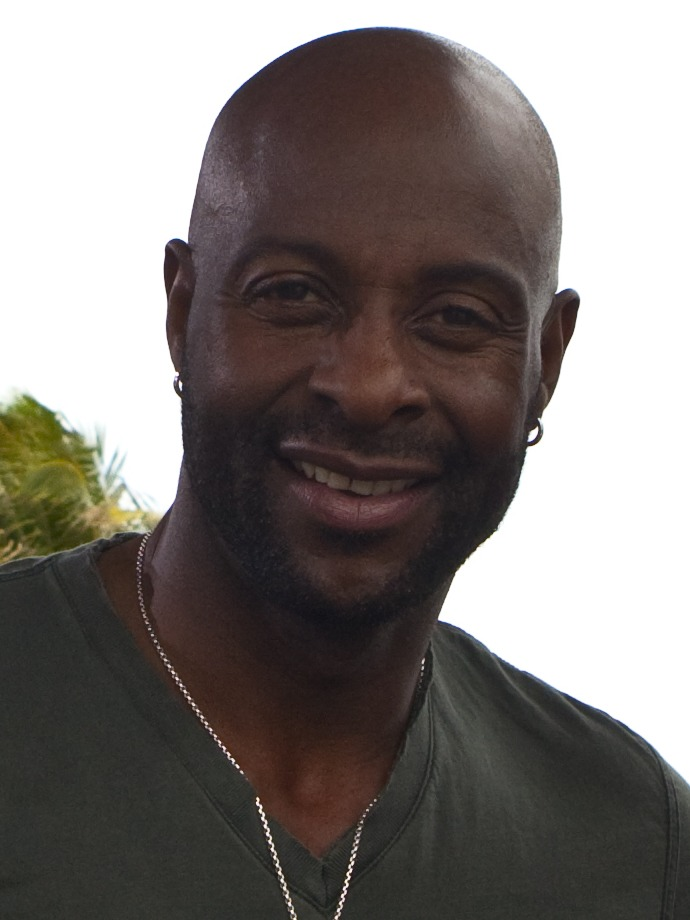

Jerry Rice
The kid from Crawford who caught bricks for his dad, then caught everything Montana and Young threw at him for 16 years in red and gold.
The Jerry Rice Story
Every Niners fan of a certain age has the same picture burned in: number 80 running a slant, the ball arriving right as he turns upfield, and then nobody catching him. You'd see it on a Sunday at Candlestick and you'd see it again on the highlights that night and it never got old. Jerry Rice did that for 16 seasons in red and gold, and when he was done he owned basically every receiving record the league keeps.
He was born October 13, 1962, in Starkville, Mississippi, and grew up in Crawford, a town of about 600 people, the sixth of eight kids. His dad Joe was a brick mason, and in the summers Jerry and his brothers worked the scaffolds with him, tossing and catching bricks. He didn't even play football until his sophomore year at B. L. Moor High, when an assistant principal caught him cutting class, watched him sprint away down the hall, and told the football coach about it. Best detention in the history of the sport.
Mississippi State didn't offer him a scholarship. Mississippi Valley State did, and coach Archie Cooley's pass happy offense was exactly the right place for him. With Willie Totten throwing, the Satellite Express put up numbers that look like typos. As a senior in 1984 Rice caught 112 passes for 1,845 yards and 27 touchdowns, he once caught 24 balls in a single game against Southern, and he finished ninth in the Heisman voting out of a Division I AA school. They called him World, because he'd catch anything in the world thrown near him.
Plenty of NFL teams shrugged. Bill Walsh didn't. Walsh saw his highlights on a hotel room TV, started drawing up plays for a guy he hadn't drafted yet, and then traded up with New England to grab him 16th overall in 1985, one pick before Dallas. Thank you, Bill. Forever.
The rookie year wasn't pretty for a while. He dropped balls, he got down on himself, and people wondered out loud if Walsh had blown it. Then came a Monday night in December against the Rams at Candlestick: 10 catches, 241 yards. He finished with 49 catches for 927 yards and was the UPI NFC Offensive Rookie of the Year. In 1986 he led the league with 1,570 yards and 15 touchdowns. In 1987, a strike shortened year, he caught 22 touchdown passes in 12 games, scored in every game he played, broke the single season record, and became the first wide receiver ever named NFL Offensive Player of the Year.
Then the rings. He was the MVP of Super Bowl XXIII in Miami, 11 catches for a Super Bowl record 215 yards, and he kept the chains moving on the 92 yard drive that won it. A year later in New Orleans he caught three touchdowns in the 55 to 10 destruction of Denver. When Joe got hurt and Steve Young took over, nothing really changed for Rice. He led the league in catches, yards and touchdowns all in the same season in 1990, broke Steve Largent's career touchdown catch record in 1992, passed Jim Brown for the career touchdown record on opening night in 1994, and then caught three more touchdowns in Super Bowl XXIX against San Diego on a bad shoulder.
People who weren't around for it don't believe the next part. In 1995, the year he turned 33, he caught 122 passes for 1,848 yards, a single season record that stood until 2012, and passed James Lofton for the career yardage record and Art Monk for the career catches record in the same season. The work ethic was its own legend. Every offseason he ran The Hill in Edgewood County Park, a steep two and a half mile climb, and he combed his hair before he put his helmet on, because he figured if you look good you play good.
The only real break in the run came in the 1997 opener at Tampa, when Warren Sapp dragged him down by the face mask on a reverse and he tore the ACL and MCL in his left knee. That ended a streak of 189 straight games. He rushed back 14 weeks later, wanting to be on the field for the night the Niners retired Joe's number, caught a touchdown, and cracked his kneecap coming down with it. Season over. He came back in 1998 and went for 1,157 yards at 36, the oldest receiver to hit 1,000 to that point.
The end in San Francisco was messy, and I still don't love thinking about it. The team went 4 and 12 in 1999 and 6 and 10 in 2000. In his last home game as a Niner, against the Bears in December 2000, Terrell Owens caught 20 passes and the day turned into somebody else's. The 49ers released him in June 2001 to clear salary and get younger.
So he went across the bay. Rice signed with the Raiders and it worked. He caught 83 balls for 1,139 yards in 2001, then 92 for 1,211 in 2002, made his 13th Pro Bowl at 40, passed Walter Payton for the career scrimmage yards record, and scored his 200th career touchdown. The Raiders made Super Bowl XXXVII, and that's the one Super Bowl he lost, 48 to 21 to Jon Gruden's Bucs, even with a 48 yard touchdown catch of his own. He's said he cried in his hotel room afterward. In 2004 he was traded to Seattle midseason and wound up playing 17 games in a 16 game season. He gave it one more summer in Denver in 2005, slid down the depth chart in the preseason, and retired on September 5, 2005.
The Niners did it right after that. On August 24, 2006, he signed a one day contract and retired as a 49er. He went into the Pro Football Hall of Fame on the first ballot, inducted in Canton on August 7, 2010, and six weeks later, at halftime of a Monday night game against the Saints, the 49ers retired number 80 at Candlestick for good. He finished with 1,549 catches, 22,895 yards, 197 receiving touchdowns, 208 total touchdowns and 1,256 points, more than any non kicker who has ever played. With the Niners alone it was 1,281 catches, 19,247 yards and 176 touchdown catches.
He never really left, either. He was the runner up on Dancing with the Stars, he's written books about his life, he's chased a golf career far enough to play a pro event, and he's still around the team. In February 2026, during Super Bowl LX week here in the Bay Area, he was the head coach of Team NFC at the Pro Bowl Games in San Francisco, coaching against his old quarterback Steve Young, and his side won 66 to 52. Some guys just keep winning.
Why He Was Clutch
The way to measure Rice is to look at what he did when the season was on the line, and the answer is he got better. He played in four Super Bowls and caught 33 passes for 589 yards and eight touchdowns, and the yards and touchdowns are still Super Bowl records. He scored in all three of his Super Bowls with the 49ers and then scored in a fourth for the Raiders at 40. His 2,245 postseason receiving yards and 22 postseason touchdown catches are still the NFL records too.
Super Bowl XXIII is the one I'd show anybody who doubts it. The game was tied at three at the half, the Niners couldn't shake Cincinnati, and Rice just kept beating them anyway: 11 catches, 215 yards, the tying touchdown in the fourth quarter, and two catches on the 92 yard drive that won it with 34 seconds left. Montana got the John Candy story. Rice got the MVP.
He was also the guy who showed up every single week. He missed only 17 regular season games in 20 years, 14 of them in 1997 and three in the 1987 strike, and he played 303 games, more than any receiver ever. When a game turned on one throw, every defense in the league knew exactly who it was going to. They still couldn't stop it.
Clutch Moments
- December 9, 1985
Ten catches, 241 yards, and the doubters go quiet
Rice's rookie year had been full of drops, and people were starting to whisper about Walsh's draft pick. Then on a Monday night at Candlestick against the Los Angeles Rams he caught 10 passes for 241 yards and a touchdown, a 49ers record at the time. The Niners lost 27 to 20, but nobody talked about the drops anymore. He was named NFC Offensive Player of the Week.
- January 22, 1989
Super Bowl XXIII MVP, 215 yards in Miami
Cincinnati took a 13 to 6 lead on a 93 yard kickoff return in the third quarter, and the Niners answered with an 85 yard drive capped by Montana's 14 yard touchdown pass to Rice early in the fourth quarter to tie it at 13. Down 16 to 13 with 3:10 left and the ball at their own 8, Montana hit Rice for 7 and then 17 yards on the game winning drive, and John Taylor caught the winner with 34 seconds left. Final, 20 to 16. Rice had 11 catches for a Super Bowl record 215 yards and was named MVP.
- January 28, 1990
Three touchdowns in the 55 to 10 rout of Denver
In Super Bowl XXIV in New Orleans, Rice scored on a 20 yard catch in the first quarter, a 38 yard catch with 34 seconds left in the first half to make it 27 to 3, and a 28 yard catch on the first play after a third quarter interception to make it 34 to 3. He finished with 7 catches for 148 yards and a Super Bowl record three touchdown catches as the Niners won back to back titles, 55 to 10.
- October 14, 1990
Five touchdowns in Atlanta
In a shootout at Atlanta, Rice caught 13 passes for 225 yards and five touchdowns, tying the NFL record for touchdown catches in a single game. The Niners needed every one of them, winning 45 to 35, and Rice was named NFC Offensive Player of the Week for the second time that season, both times against the Falcons.
- September 5, 1994
Career touchdown 127 on Monday night
On opening night of the 1994 season against the Los Angeles Raiders at Candlestick, Rice caught 7 passes for 169 yards and two touchdowns and ran for another. Those three scores gave him 127 career touchdowns, moving him past Jim Brown for the most in NFL history. San Francisco won 44 to 14, and the run to the franchise's fifth Super Bowl title started that night.
- January 29, 1995
Three more Super Bowl touchdowns on a bad shoulder
On the third play of Super Bowl XXIX in Miami, Steve Young hit Rice for a 44 yard touchdown, the fastest touchdown in Super Bowl history at the time. Rice hurt his shoulder in the first quarter, kept playing, and added touchdowns of 15 and 7 yards in the second half, the last one Young's record sixth touchdown pass, to make it 49 to 18. The Niners beat San Diego 49 to 26. Rice had 10 catches for 149 yards and became the first player to catch three touchdowns in a Super Bowl twice.
- December 18, 1995
289 yards against the Vikings
On a Monday night at Candlestick in the next to last week of the 1995 season, Rice caught 14 passes for a career high 289 yards and three touchdowns in a 37 to 30 win over Minnesota. It was the centerpiece of the 1,848 yard season that set the single season receiving record, and it won him another NFC Offensive Player of the Week award.
- January 26, 2003
A touchdown at 40, in the only Super Bowl he lost
With the Raiders in Super Bowl XXXVII in San Diego, the Bucs led 34 to 3 before Oakland made a run. Rich Gannon found Rice for a 48 yard touchdown with 6:06 left to make it 34 to 21, but Tampa Bay pulled away and won 48 to 21. Rice led the Raiders with 5 catches for 77 yards and became the first player to score a Super Bowl touchdown for two different teams. It's the only Super Bowl loss of his career.
The Highlights
What They Said About Rice
“At that point, everyone sort of sat back and said, 'Whoa.'”
“He had a lot of adjusting to do. You come from Mississippi Valley State and they tell you to run a 10-yard hook, and it's a 10-yard hook. With Bill Walsh, on a 10-yard hook you had 10 different options. After that Rams game, he really started getting into this unbelievably competitive thing. He wanted to take it to another level.”
“He has the knack of knowing when to break, when to use his speed.”
“We're all measured by how we do against Rice. I remember the first time an NFL scout talked to me right before the draft. The only thing he asked me was if I thought I could cover Jerry Rice.”
“He can catch a BB on a dead run at night.”
“We did take the 49ers out of their running game, but Jerry was the one ingredient we had a hard time stopping”
“When you think of Jerry, he was supreme. He did things nobody was able to do ever or ever will do.”
Career Stats
| Year | Team | G | GS | Rec | Yds | Avg | TD |
|---|---|---|---|---|---|---|---|
| 1985 | SF | 16 | 4 | 49 | 927 | 18.9 | 3 |
| 1986 | SF | 16 | 15 | 86 | 1,570 | 18.3 | 15 |
| 1987 | SF | 12 | 12 | 65 | 1,078 | 16.6 | 22 |
| 1988 | SF | 16 | 16 | 64 | 1,306 | 20.4 | 9 |
| 1989 | SF | 16 | 16 | 82 | 1,483 | 18.1 | 17 |
| 1990 | SF | 16 | 16 | 100 | 1,502 | 15.0 | 13 |
| 1991 | SF | 16 | 16 | 80 | 1,206 | 15.1 | 14 |
| 1992 | SF | 16 | 16 | 84 | 1,201 | 14.3 | 10 |
| 1993 | SF | 16 | 16 | 98 | 1,503 | 15.3 | 15 |
| 1994 | SF | 16 | 16 | 112 | 1,499 | 13.4 | 13 |
| 1995 | SF | 16 | 16 | 122 | 1,848 | 15.1 | 15 |
| 1996 | SF | 16 | 16 | 108 | 1,254 | 11.6 | 8 |
| 1997 | SF | 2 | 1 | 7 | 78 | 11.1 | 1 |
| 1998 | SF | 16 | 16 | 82 | 1,157 | 14.1 | 9 |
| 1999 | SF | 16 | 16 | 67 | 830 | 12.4 | 5 |
| 2000 | SF | 16 | 16 | 75 | 805 | 10.7 | 7 |
| 2001 | OAK | 16 | 15 | 83 | 1,139 | 13.7 | 9 |
| 2002 | OAK | 16 | 16 | 92 | 1,211 | 13.2 | 7 |
| 2003 | OAK | 16 | 15 | 63 | 869 | 13.8 | 2 |
| 2004 | OAK | 6 | 5 | 5 | 67 | 13.4 | 0 |
| 2004 | SEA | 11 | 9 | 25 | 362 | 14.5 | 3 |
| Career | 303 | 284 | 1,549 | 22,895 | 14.8 | 197 |
Regular season. 1987 was shortened by the players' strike; 1997 was lost to a torn ACL and a cracked kneecap. In 2004 he played 6 games for Oakland and 11 for Seattle. With the 49ers alone: 238 games, 1,281 catches, 19,247 yards, 176 touchdown catches. He also scored on a fumble recovery in 1995, for 208 career touchdowns. Scroll the table sideways on a phone.
Postseason receiving
| Year | Team | G | Rec | Yds | Avg | TD |
|---|---|---|---|---|---|---|
| 1985 | SF | 1 | 4 | 45 | 11.3 | 0 |
| 1986 | SF | 1 | 3 | 48 | 16.0 | 0 |
| 1987 | SF | 1 | 3 | 28 | 9.3 | 0 |
| 1988 | SF | 3 | 21 | 409 | 19.5 | 6 |
| 1989 | SF | 3 | 19 | 317 | 16.7 | 5 |
| 1990 | SF | 2 | 11 | 122 | 11.1 | 1 |
| 1992 | SF | 2 | 14 | 211 | 15.1 | 1 |
| 1993 | SF | 2 | 9 | 126 | 14.0 | 0 |
| 1994 | SF | 3 | 16 | 233 | 14.6 | 4 |
| 1995 | SF | 1 | 11 | 117 | 10.6 | 0 |
| 1996 | SF | 2 | 9 | 86 | 9.6 | 1 |
| 1998 | SF | 2 | 4 | 69 | 17.3 | 1 |
| 2001 | OAK | 2 | 13 | 231 | 17.8 | 1 |
| 2002 | OAK | 3 | 14 | 203 | 14.5 | 2 |
| 2004 | SEA | 1 | 0 | 0 | 0 | |
| Career | 29 | 151 | 2,245 | 14.9 | 22 |
Regular season rushing
| Year | Team | Att | Yds | TD |
|---|---|---|---|---|
| 1985 | SF | 6 | 26 | 1 |
| 1986 | SF | 10 | 72 | 1 |
| 1987 | SF | 8 | 51 | 1 |
| 1988 | SF | 13 | 107 | 1 |
| 1989 | SF | 5 | 33 | 0 |
| 1990 | SF | 2 | 0 | 0 |
| 1991 | SF | 1 | 2 | 0 |
| 1992 | SF | 9 | 58 | 1 |
| 1993 | SF | 3 | 69 | 1 |
| 1994 | SF | 7 | 93 | 2 |
| 1995 | SF | 5 | 36 | 1 |
| 1996 | SF | 11 | 77 | 1 |
| 1997 | SF | 1 | -10 | 0 |
| 1998 | SF | 0 | 0 | 0 |
| 1999 | SF | 2 | 13 | 0 |
| 2000 | SF | 1 | -2 | 0 |
| 2001 | OAK | 0 | 0 | 0 |
| 2002 | OAK | 3 | 20 | 0 |
| 2003 | OAK | 0 | 0 | 0 |
| 2004 | OAK | 0 | 0 | 0 |
| 2004 | SEA | 0 | 0 | 0 |
| Career | 87 | 645 | 10 |